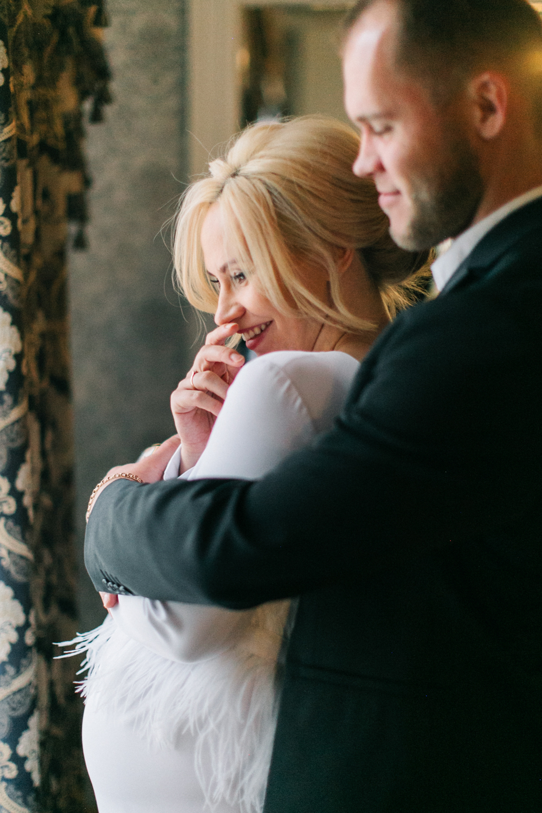

Меня зовут Катя Курникова я счастливый свадебный фотограф, который снимает по всему миру.
Я специализируюсь на художественной съёмке, дополняя её элегантным репортажем. Меня вдохновляют чувственные портреты, нежные истории о любви и Ваши чувства! В своих фотографиях я хочу поделиться мягким естественным светом, красивыми деталями и самыми добрыми эмоциями.
Буду рада снять чудесную историю о Вас.

ЕЩЕ...
ВАШИ ДОБРЫЕ СЛОВА
"Когда мы посмотрели фото, было ощущение, что этот волшебный день происходил не с нами! Кадры бесподобные. Ты успела поймать все лучшие моменты. А качество просто идеальное! В который раз мы убедились, что фотограф был выбран лучший. А фото в печати это просто разрыв сердечка, мы давно таких не встречали. Спасибо тебе большое!"

”If we had to go back in time and our wedding day and choose a photographer again, we would pick Katya every time. Not only did she capture every detail and moment with such warmth and care, but she also created stunning images that feel timeless. On the top of all that, she has such an easygoing and positive personality that made the day feel fun and carefree, which is exactly what we wanted! We couldn’t recommend her enough!”

"Мы искали фотографа особенно ответственно, ведь фото - это почти единственное, что останется как память об этом дне. Хотелось, чтобы наше видение совпало или хотя бы было близко со взглядом фотографа. Так вот в случае с Катей мы попали в точку, и все вышло идеально! Мы долго просматривали портфолио разных фотографов, а тут получилось так, что нам нравились все Катины съемки. Свет, цвет, настроение, детали, ракурсы, живые фото... когда мы получили фотографии, я просто влюбилась в них. А ещё с Катей очень легко, она открытая, искренняя, помогала нам весь день, и у меня было ощущение, что я знакома с ней давно, и Катя - это ещё одна подружка невесты. Отсюда и процесс съемки был веселым и непринужденным. В общем, если вы хотите, чтобы в приятной дружеской атмосфере была запечатлена красота, даже там, где ее не видно, обращайтесь к Кате, мы искренне советуем."

"Катюня! Милая,волшебная кудряшка!
В тебе так много дивного света и как здорово,что он льётся через призму твоего таланта фотографа. Ты умеешь останавливать время, ловить момент и настолько к себе располагаешь, что никто не останется равнодушным! Спасибо тебе!"
"Нам все очень понравилось, спасибо большое! Мы так рады, что выбрали тебя, наш человечек! Профессионал своего дела, лучшая из лучших и просто нереально крутой человек. Просто нет слов, нам нравятся все фото! Мы в восторге!"
"Когда мы посмотрели фото, было ощущение, что этот волшебный день происходил не с нами! Кадры бесподобные. Ты успела поймать все лучшие моменты. А качество просто идеальное! В который раз мы убедились, что фотограф был выбран лучший. А фото в печати это просто разрыв сердечка, мы давно таких не встречали. Спасибо тебе большое!"
”If we had to go back in time and our wedding day and choose a photographer again, we would pick Katya every time. Not only did she capture every detail and moment with such warmth and care, but she also created stunning images that feel timeless. On the top of all that, she has such an easygoing and positive personality that made the day feel fun and carefree, which is exactly what we wanted! We couldn’t recommend her enough!”
"Мы искали фотографа особенно ответственно, ведь фото - это почти единственное, что останется как память об этом дне. Хотелось, чтобы наше видение совпало или хотя бы было близко со взглядом фотографа. Так вот в случае с Катей мы попали в точку, и все вышло идеально! Мы долго просматривали портфолио разных фотографов, а тут получилось так, что нам нравились все Катины съемки. Свет, цвет, настроение, детали, ракурсы, живые фото... когда мы получили фотографии, я просто влюбилась в них. А ещё с Катей очень легко, она открытая, искренняя, помогала нам весь день, и у меня было ощущение, что я знакома с ней давно, и Катя - это ещё одна подружка невесты. Отсюда и процесс съемки был веселым и непринужденным. В общем, если вы хотите, чтобы в приятной дружеской атмосфере была запечатлена красота, даже там, где ее не видно, обращайтесь к Кате, мы искренне советуем."
"Катюня! Милая,волшебная кудряшка! В тебе так много дивного света и как здорово,что он льётся через призму твоего таланта фотографа. Ты умеешь останавливать время, ловить момент и настолько к себе располагаешь, что никто не останется равнодушным! Спасибо тебе!"
"Нам все очень понравилось, спасибо большое! Мы так рады, что выбрали тебя, наш человечек! Профессионал своего дела, лучшая из лучших и просто нереально крутой человек. Просто нет слов, нам нравятся все фото! Мы в восторге!"